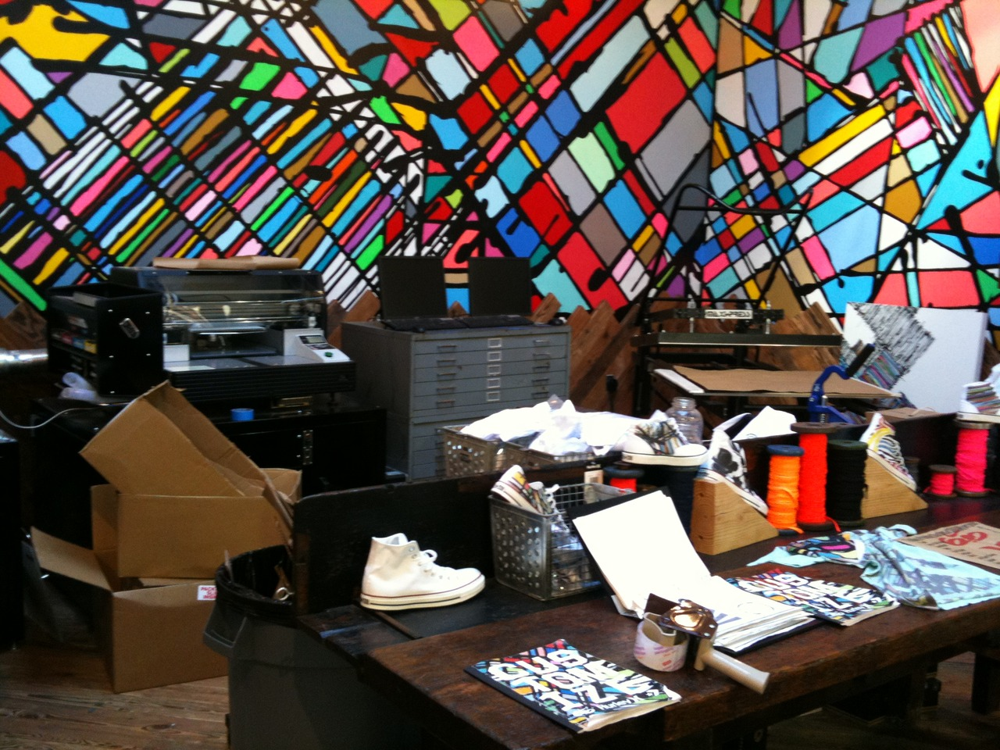

NikeID Evolved at Nike 6.0/Hurley/Converse Retail Store
This afternoon between meetings I stopped by Nike’s second combined action sports brand retail space, Nike 6.0/Hurley/Converse, at the Irvine Spectrum in southern Orange County, California (the first store is in Laguna Beach, CA - 225 Forest). I managed to take a few pictures on my phone before I was asked to leave the store (**more on that below).
The retail space was a brilliant move on the part of Nike to help gain further main-stream exposure to their 6.0 line to an audience that is quite familiar with the Nike owned Hurley and Converse brand. The most unique aspect of the store was the large area filled with binders of art, spools of colorful laces, screen printers, and high-tech printers for product customizations. At the NikeID station pair up with a “Maestro” who will help you as you customize your purchase with artwork from kidrobot, Jason Maloney (Hurley), Aero (Nike) and many others. Virtually everything you buy in the store can be customized—shoes, board shorts, teeshirts, hats, and jackets.
In addition to the Nike 6.0, Hurley, and Converse products the store also carried an array of other design-focused products like Skullcandy headphones and Kidrobot toys.
Personally I believe we’re about to see a surge of product customization as brands are starting to wake up to contemporary culture. Obviously this trend will take off in youth culture markets, but the opportunity is just as strong for brands in virtually all markets.
** I fully understand that taking photos in retail space has long been taboo for the reason of “protecting trade secrets and copyrights”, but in this day and age of Twitter, Tumblr, and Facebook the idea of shunning people of taking snapshots with their phone seems counter-productive. We’re living in a time where brands are integrating rewards programs with social media, location aware apps are taking off, and 850 million photos are uploaded to Facebook each month. It’s time to fully embrace the fact consumers play a massive role in cultivating and adding value to, even at the risk of “loosing trade secrets”. When I was very politely told I was not welcome to take photos, I apologized and left.